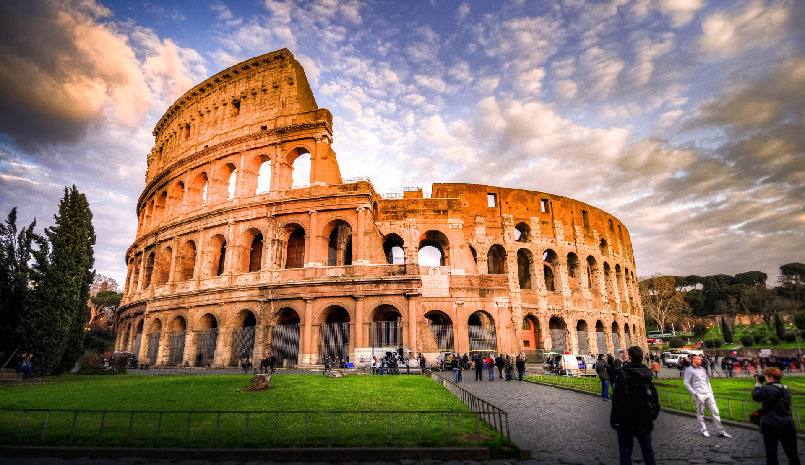

Desde hace siglos, millones de viajeros visitan Italia ya que es un país que goza de un gran patrimonio histórico
Si deseas hacer una visita al mundo clásico, descubrir numerosos monumentos declarados Patrimonio de la Humanidad por la Unesco
y cambiar tu perspectiva, debes viajar a Italia.Además podrás conocer lugares peculiares que encontrarás solo en Italia.
Te recomendamos visitar las siguientes ciudades:
|
|
|
| 
| Caminar por Roma es como caminar por un museo, sus plazas, sus fuentes, sus ruinas, su Coliseo que siglos atrás era testigo de luchas interminables por los llamados gladiadores romanos.
Roma ha sido cuna de grandes pintores, escultores, arquitectos, podremos disfrutar de obras de artistas tan conocidos como Miguel Ángel, Rafael…
Podrás ver la famosa Fontana di Trevi, Coliseo Romano, El Vaticano, Plaza de España, Catacumbas... y muchos más.
|
|
Pisa
|
|
|
| |